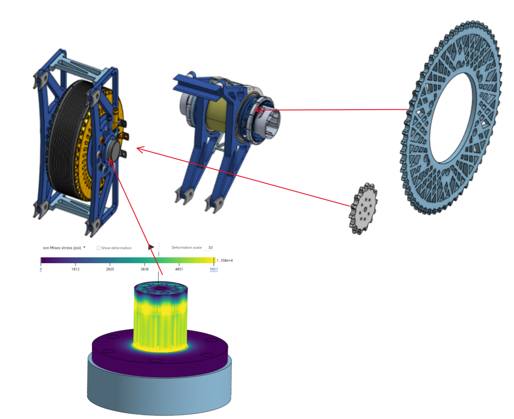
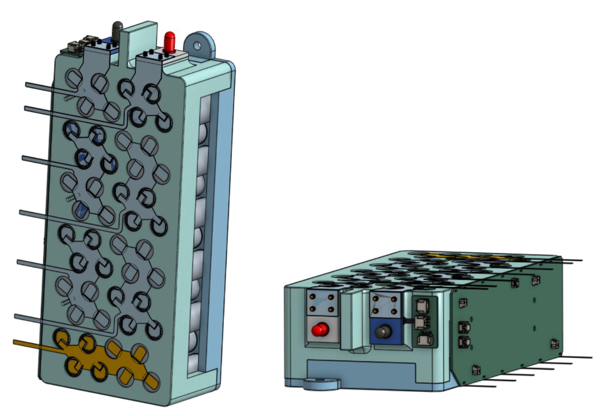
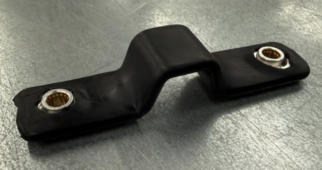

Project Overview
I worked on BYU's Formula SAE Electric team as the Powertrain Team Lead while also completing my senior capstone project on the vehicle's high-voltage tractive battery.
These roles gave me experience on both the system and component levels. As Powertrain Team Lead, I coordinated a 10-member engineering team responsible for developing and assembling the vehicle's drivetrain. On the battery capstone project, I took direct responsibility for the accumulator maintenance plugs and battery thermal analysis.
Powertrain Team Lead
As Powertrain Team Lead, I led a 10-member engineering team responsible for developing and assembling the drivetrain for BYU's Formula SAE electric vehicle.
Rather than owning a single drivetrain component, my role involved working across the complete powertrain system. I helped team members throughout the design and assembly process, coordinated work between different drivetrain components, and organized the team toward the goal of producing a functional powertrain.
This required understanding how the motor, chain drive, sprockets, shafts, bearings, and supporting structures interacted as a complete mechanical system.

System Integration & Assembly
A major part of my role was helping bring individually developed components together into a functioning drivetrain. I supported work throughout the assembly process and helped resolve integration issues as the system moved from individual designs to physical hardware.
Leading the team also involved organizing engineering work, tracking progress, communicating between team members, and helping ensure individual components worked together within the packaging and performance requirements of the vehicle.

Tractive Battery Capstone
In addition to leading the powertrain team, I worked on the redesign of the vehicle's high-voltage tractive battery as part of my senior capstone project.
The accumulator was redesigned around modular battery segments with the goal of improving electrical performance, serviceability, packaging, and Formula SAE compliance.
My primary individual responsibilities on the accumulator project were the design and manufacturing of the maintenance plugs and the thermal analysis of the battery system.

Battery Thermal Analysis
I was responsible for the thermal calculations used to evaluate the battery's temperature behavior and cooling requirements. The analysis considered heat generated by the battery cells and the thermal path through the surrounding module structure.
I developed heat-transfer models to estimate battery temperatures and determine how effectively heat could be transferred through the module and accumulator structure. This analysis helped evaluate whether the battery could remain within acceptable operating temperatures and guided thermal-management decisions.

Individual Contribution
Heat Transfer Analysis • Thermal Calculations • Battery Thermal Management
Maintenance Plug Design
I designed the maintenance plugs used to electrically divide the accumulator into isolated sections for servicing, inspection, and safety.
The design required consideration of electrical isolation, mechanical retention, accessibility, manufacturing, and the Formula SAE requirements governing the high-voltage accumulator.
After completing the design, I manufactured the components and incorporated them into the physical accumulator system.

Individual Contribution
CAD • Component Design • Manufacturing • High-Voltage Safety
Project Experience
Formula SAE gave me experience in two different aspects of engineering: leading a team through the development and assembly of a complete mechanical system and taking individual technical ownership of specific engineering problems within the tractive battery.
The project combined team leadership, system integration, hands-on vehicle assembly, mechanical design, manufacturing, and heat-transfer analysis.